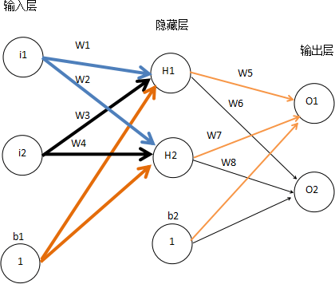

神经网络分类算法原理详解
通过《人工神经网络是什么》一节，我们了解了神经网络的发展历程，同时掌握了人工神经网络的基本结构。在本节将主要围绕“反向传播算法”对人工神经网络的分类原理进行讲解。
在神经网络算法还没流行前，机器学习领域最受关注的算法是“支持向量机算法（即 SVM 算法）”，如今神经网络方兴未艾，您也许会好奇，神经网络各层的原理和结构都高度相似，为什么要堆叠这么多的神经网络层呢？就好比为什么单层感知器模型不能解决异或问题，但只要加上隐藏层就能解决呢？到底是谁赋予了神经网络如此奇妙的魔力。
一般来说，神经网络的层数越多，网络模型的学习能力就越强，就越能拟合复杂的数据分布。但这只是一种理想状态，因为随着网络的加深，也会带来其他问题，比如计算的难度也会增加，同时模型理解起来也比较晦涩。因此选择恰当的网络层数去解决适合的场景，这是神经网络算法中的难点。
图1：人工神经网络模型
如图 1 所示， A、B、C、D 是四位盲人，他们要玩“盲人摸象”的游戏。在数据集中有以下四个动物：大象、野猪、犀牛、麋鹿。四个人中 A、B、C 负责去摸动物（即动物特征），D 负责汇总分析 A、B、C 传递给他的信息，同时还会有人告诉 D，这一轮他们摸到是什么动物。此外，规定只有当 A、B、C 三个人摸到一下三个特征的时候向 D 汇报：
对于上述示例来说，A/B/C/D 其实构成了一个简单的神经网络模型，它们就想当于四个神经元，A/B/C 负责去“摸”，也就是回去不同维度的输入数据，构成了神经网络的输入层。当它们三个人获取数据后都会告诉 D，通过 D 汇总分析，给出最终预测结果，即判断是不是大象，这相当于神经网络的输出层。神经网络能够把分散的信息进行汇总，从而提取出最有价值、权威的信息。若只是将网络中的一个独立节点拎出来都是以偏概全，比如 C 认为尾巴像鞭子的都是大象，这显然不合理的。
神经网络通过赋予输入信息不同的权重值来区别不同信息的重要程度。在模型训练过程中通过调节线性函数的相应权值，增加有价值信息的输入权值，降低其他价值信息较低的输入权值，这是【调优权值】的核心思想，通过上述方法能够提高网络模型预测的预测准确率。
我们知道，人工神经网络是由一个个的神经元节点构成的，这些节点的作用就是负责接受和传导信息，如同大脑神经元一样，接受外接刺激，传递兴奋信号。
在一个人工神经网络模型中，从输入层开始，传递到输出层，最后返回结果，这种信号传播方式被称为“正向传播”（或称前向运算、前向传播）。在神经网络模型中，若输入一层层的传递下去的，直到输出层产生输出，正向传播就结束了。
反向传播的与前向传播类似，但由于传播方向相反，因此被称为反向传播算法（简称 BP 算法），该算法最早出现在 20 世纪 60 年代，但当时并没有引起重视，直到 1986 年经 Hinton 等人进行了重新描述，才再次进入大众的视野。该算法成功解决了少数层神经网络【权值参数】计算的问题。
图2：前向运算和反向传播示意图
BP 算法的学习过程由正向传播过程和反向传播过程两部分组成。在正向传播过程中，输入信息通过输入层经隐含层，逐层处理并传向输出层，如果输出值与标记值存在误差，则将误差由输出层经隐藏层向输入层传播（即反向传播），并在这个过程中利用梯度下降算法对神经元的各个权值参数进行调优，当误差达到最小时，网络模型训练结束，也即反向传播结束。流程图如下所示：
图3：神经网络模型训练
对上述过程进行总结：输入层接受一个输入数据 x，同时初始化一个权重参数 ω，通过隐藏层计算之后，由输出层输出结果，前向运算完成。之后，将输出层结果与标记值进行比较，获取偏差值，将此偏差值由输出层向输入层传播（反向传播阶段），这个阶段利用梯度下降算法对权值参数进行反复调优，当偏差值最小时，获得一组最优的权值参数（ω）。
首先对网络模型的数据做一下简单说明：
前向运算阶段：输入层 --> 隐藏层 -->输出层，计算神经元 H1 的权值加和：
将初始化数据带入上述公式，可得以下结果：

隐藏层神经元的 H1 的输出结果，注意此结果需要经过激活函数映射：
同理依照上述方法可以计算出 H2 神经元输出，其结果如下：
下面计算输出层 O1 真实输出结果，如下所示：
将数据带入上述公式，经过激活函数映射，求得输出层 O1 的结果：
同理，按照上述方法可以计算出 O2 真实的输出结果：
我们以 w5 为例对其进行调整，要知道 w5 对于整体误差到底产生多少影响，这里采用链式法则求偏导数，如下所示：
要想求得 w5 的偏导数，需要对另外三部分别求偏导数，如下所示：
将上述三部分的结果相乘就可以得到 w5 的偏导数，其结果值为 0.082167041。最后使用梯度下降算法更新 w5 参数值，如下所示：
上述过程只是输出层向隐藏层传播，当计算出更新的权值后，开始由隐藏层向输入层传播，并依次更新 w1、w2、w3、w4，这样就完成了第一轮的权值更新。可以看出，通过第一轮权值更新后，总误差由 0.298371109 下降至 0.291027924，在迭代 10000 次后，总误差为 0.000035085，输出值为 [0.015912196, 0.984065734]，已经非常逼近期望值 [0.01, 0.99]。
神经网络算法通过反向传播机制让所有神经元实现了权值更新，当我们不断迭代上述训练过程，直到偏差值最小，最终就会得到一个最优的网络模型，实现了对数据的最佳拟合。
在神经网络算法还没流行前，机器学习领域最受关注的算法是“支持向量机算法（即 SVM 算法）”，如今神经网络方兴未艾，您也许会好奇，神经网络各层的原理和结构都高度相似，为什么要堆叠这么多的神经网络层呢？就好比为什么单层感知器模型不能解决异或问题，但只要加上隐藏层就能解决呢？到底是谁赋予了神经网络如此奇妙的魔力。
一般来说，神经网络的层数越多，网络模型的学习能力就越强，就越能拟合复杂的数据分布。但这只是一种理想状态，因为随着网络的加深，也会带来其他问题，比如计算的难度也会增加，同时模型理解起来也比较晦涩。因此选择恰当的网络层数去解决适合的场景，这是神经网络算法中的难点。
神经网络工作流程
下面通过一个简单的示例来理解神经网络究竟是如何工作的：图1：人工神经网络模型
如图 1 所示， A、B、C、D 是四位盲人，他们要玩“盲人摸象”的游戏。在数据集中有以下四个动物：大象、野猪、犀牛、麋鹿。四个人中 A、B、C 负责去摸动物（即动物特征），D 负责汇总分析 A、B、C 传递给他的信息，同时还会有人告诉 D，这一轮他们摸到是什么动物。此外，规定只有当 A、B、C 三个人摸到一下三个特征的时候向 D 汇报：
特征一：像一根柱子（腿部） 特征二：像一把蒲扇（耳朵） 特征三：像一条鞭子（尾巴）注意，游戏在理想状态下进行的，不考虑其他外界因素。下面按照有监督学习的流程，先训练再预测。摸动物的过程，其实就是获取动物部位特征的过程，因为有 4 只动物，因此此处需要轮询 4 次，下面是四轮完成后 D 汇总的信息，如下所示：
第一次，大象： A：像一根柱子（腿部） B：像一把蒲扇（耳朵） C：像一条鞭子（尾巴） 第二次，野猪： B：像一把蒲扇 C：像一条鞭子 第三次，犀牛： A：像一把蒲扇 C：像一条鞭子 第四次，麋鹿： C：像一条鞭子通过对上述汇总信息的分析，D 认为，C 汇报的最没有价值（即权重小），因为无论是不是大象，他所汇报的内容都是一样的。D 认为，相比之下，A 和 B 的报告更有价值（权重大），但各自汇报也会有错误的时候。经过 D 研究发现，只要将 A 和 B信息进行汇总，当两人同时说摸到【柱子和蒲扇】时，那么被摸的动物就是大象，这样即便是盲人也能通过精诚团结摸出大象来。
对于上述示例来说，A/B/C/D 其实构成了一个简单的神经网络模型，它们就想当于四个神经元，A/B/C 负责去“摸”，也就是回去不同维度的输入数据，构成了神经网络的输入层。当它们三个人获取数据后都会告诉 D，通过 D 汇总分析，给出最终预测结果，即判断是不是大象，这相当于神经网络的输出层。神经网络能够把分散的信息进行汇总，从而提取出最有价值、权威的信息。若只是将网络中的一个独立节点拎出来都是以偏概全，比如 C 认为尾巴像鞭子的都是大象，这显然不合理的。
神经网络通过赋予输入信息不同的权重值来区别不同信息的重要程度。在模型训练过程中通过调节线性函数的相应权值，增加有价值信息的输入权值，降低其他价值信息较低的输入权值，这是【调优权值】的核心思想，通过上述方法能够提高网络模型预测的预测准确率。
神经元节点的个数和层数越多，神经网络的表达能力就越强，或者说拟合数据的能力就越强，这也是神经网络算法与其他机器学习学习算法相比，为什么适合处理图像识别、语音识别等复杂任务的根本原因。
反向传播算法
在神经网络模型中有两个重要部件，分别是：激活函数和反向传播 BP 算法，关于激活函数的相关概念，在《人工神经网络是什么》一节已经做了相关介绍，那到底什么是反向传播算法呢？在讲解反向传播之前，有必要先了解一下正向传播的概念。我们知道，人工神经网络是由一个个的神经元节点构成的，这些节点的作用就是负责接受和传导信息，如同大脑神经元一样，接受外接刺激，传递兴奋信号。
在一个人工神经网络模型中，从输入层开始，传递到输出层，最后返回结果，这种信号传播方式被称为“正向传播”（或称前向运算、前向传播）。在神经网络模型中，若输入一层层的传递下去的，直到输出层产生输出，正向传播就结束了。
反向传播的与前向传播类似，但由于传播方向相反，因此被称为反向传播算法（简称 BP 算法），该算法最早出现在 20 世纪 60 年代，但当时并没有引起重视，直到 1986 年经 Hinton 等人进行了重新描述，才再次进入大众的视野。该算法成功解决了少数层神经网络【权值参数】计算的问题。
图2：前向运算和反向传播示意图
1) 反向传播原理
反向传播算法（BP）是一种有监督学习算法，即通过有标记的训练数据来学习，它是训练人工神经网络模型的常用方法之一。简单的来说，BP 算法就是从错误中学习，直至将错误程度降到最低时结束，从而提高模型的可靠性。BP 算法的学习过程由正向传播过程和反向传播过程两部分组成。在正向传播过程中，输入信息通过输入层经隐含层，逐层处理并传向输出层，如果输出值与标记值存在误差，则将误差由输出层经隐藏层向输入层传播（即反向传播），并在这个过程中利用梯度下降算法对神经元的各个权值参数进行调优，当误差达到最小时，网络模型训练结束，也即反向传播结束。流程图如下所示：
图3：神经网络模型训练
对上述过程进行总结：输入层接受一个输入数据 x，同时初始化一个权重参数 ω，通过隐藏层计算之后，由输出层输出结果，前向运算完成。之后，将输出层结果与标记值进行比较，获取偏差值，将此偏差值由输出层向输入层传播（反向传播阶段），这个阶段利用梯度下降算法对权值参数进行反复调优，当偏差值最小时，获得一组最优的权值参数（ω）。
2) 应用示例
现有如下神经网络模型，由三层组成，分别是输入层，隐藏层，输出层，并以 Sigmoid 函数为神经网络的激活函数。下面看看反向传播算法是如何运算的，又是如何实现参数调优的。

图4：神经网络模型
图4：神经网络模型
首先对网络模型的数据做一下简单说明：
输入层：i1=0.05，i2 = 0.1 初始化权值参数：w1=0.15，w2=0.2，w3=0.25，w4=0.3，w5=0.4，w6=0.45，w7=0.5，w8=0.55 输出层标记值（即期望值）：o1=0.01，o2=0.99 偏置项权重值：b1=0.35，b2=0.6下面使用反向传播算法使真实输出与标记值尽可能地接近，即真实值与标记值的偏差值最小。按照上述流程我们一步步进行计算。
前向运算阶段：输入层 --> 隐藏层 -->输出层，计算神经元 H1 的权值加和：
将初始化数据带入上述公式，可得以下结果：
隐藏层神经元的 H1 的输出结果，注意此结果需要经过激活函数映射：
同理依照上述方法可以计算出 H2 神经元输出，其结果如下：
下面计算输出层 O1 真实输出结果，如下所示：
将数据带入上述公式，经过激活函数映射，求得输出层 O1 的结果：
同理，按照上述方法可以计算出 O2 真实的输出结果：
通过上述运算可以得出：输出的实际结果与标记值相差甚远，计算结果是 [0.75136507,0.772928465]，而实际上标记值是 [0.01,0.99]。 接下来使用反向传播算法，迭代更新权值，重新计算输出。
反向传播阶段，输出层 --> 隐藏层 --> 输入层，首先使用 MSE 均方误差公式计算总误差：
注意：MSE 是一种衡量“平均误差”较为方便的方法，MSE 可以评价数据的变化程度，MSE 的值越小，说明预测模型的泛化能力越好。
经上述计算求出了总误差（Etotal），这个值是由神经网络中所有节点“共同”组成的。因此就要计算每个神经元节点到底“贡献”了多少偏差值，这是反向传播算法要解决的核心问题，当然解决方法也很简单，即求偏导数，比如求 A 节点贡献了多少损失值，我们就对该节点求偏导数即可。我们以 w5 为例对其进行调整，要知道 w5 对于整体误差到底产生多少影响，这里采用链式法则求偏导数，如下所示：
要想求得 w5 的偏导数，需要对另外三部分别求偏导数，如下所示：
将上述三部分的结果相乘就可以得到 w5 的偏导数，其结果值为 0.082167041。最后使用梯度下降算法更新 w5 参数值，如下所示：
注意： η 是梯度下降算法中的学习率，此处取值 0.5，在前面讲解梯度下降算法时已经做了相关介绍，参考《梯度下降求极值》。
这样就完成了 w5 权值更新，同理，依照上述方法可以完成 w6、w7、w8 更新。上述过程只是输出层向隐藏层传播，当计算出更新的权值后，开始由隐藏层向输入层传播，并依次更新 w1、w2、w3、w4，这样就完成了第一轮的权值更新。可以看出，通过第一轮权值更新后，总误差由 0.298371109 下降至 0.291027924，在迭代 10000 次后，总误差为 0.000035085，输出值为 [0.015912196, 0.984065734]，已经非常逼近期望值 [0.01, 0.99]。
总结
神经网络分类算法是一种有监督学习算法，使用神经网络分类算法，大致需要以下五步：- 初始化神经网络中所有神经元节点的权值；
- 输入层接收输入，通过正向传播产生输出；
- 根据输出的预测值，结合实际值计算偏差；
- 输出层接收偏差，通过反向传播机制（逆向反推）让所有神经元更新权值；
- 从第 2 步到第 4 步是一次完整的训练模型的过程，重复该过程，直到偏差值最小。
神经网络算法通过反向传播机制让所有神经元实现了权值更新，当我们不断迭代上述训练过程，直到偏差值最小，最终就会得到一个最优的网络模型，实现了对数据的最佳拟合。
关注公众号「站长严长生」，在手机上阅读所有教程，随时随地都能学习。内含一款搜索神器，免费下载全网书籍和视频。

微信扫码关注公众号